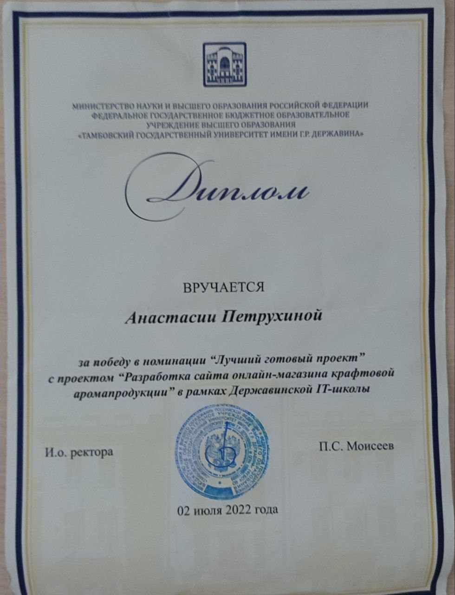
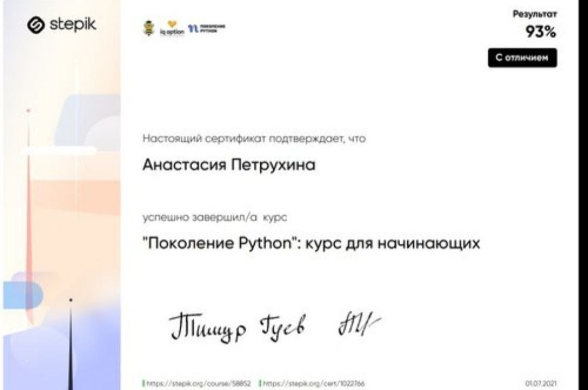

Сверстаю для вас сайт, протестирую и автоматизаторую на Python
Немного обо мне ;)
В свои 19 лет у меня за плечами нет огромного опыта работы, но я человек, с которым вам захочется познакомиться и поработать.
За последний год, я осознала, что хочу связать свою жизнь с разнообразным миром IT, поэтому всячески стараюсь развиваться, повышать "Hard skills" и получать опыт там, где его можно получить
В будущем я мечтаю поучаствовать в больших и интересных проектах, принести пользу и прибыль компании. Для меня важна работа в команде, ведь только так можно повысить эффективность и достичь поставленнх целей организации. А благодаря своим навыкам коммуникабельности и стрессоустойчивости, замотивирую коллег мыслить позитивно и при этом рационально.
Что я уже знаю/ умею
Знаю язык программирования Python на базовом уровне
Проходила курс Веб-дизайна от университета, пожтому есть база HTML, CSS
Умею работать с Linux ОС, Bash, GIT
Теория тестирования, читала книги Романа Савина и Билла Лабуна
Прохожу курс в онлайн-школе SkillFactory, тестировщик-автоматиатор на Python


Тут вы узнаете чем я занимаюсь в свободное время ;)
В 15 лет я окончила музыкальную школу по классу фортепиано, потом по ютубу научилась сама играть на скрипке, даже выступала несколько раз в узком кругу. Люблю читать классическую/техническую/психологическую литературу, занимаюсь спортом, веду в целом активный образ жизни, обещаю, что со мной будет не скучно.
Учусь в Тамбовском государственном университете на 2 курсе, направление "Сервис", но моя душа лежит к миру IT. Тем не менее я узнаю много интересного и полезного для себя.